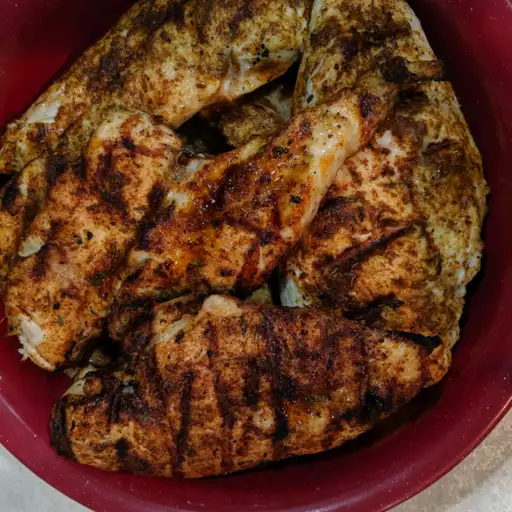

Blackened Chicken

Prep Time: 10 mins | Cook Time: 10 mins | Total Time: 20 mins | Servings: 2 | Yield: 2 Chicken Breast Halves
Description:
Banana pudding is a classic dessert that is loved by people of all ages. It's made up of layers of creamy vanilla pudding, sliced bananas, and crunchy vanilla wafers. The ingredients are usually assembled in a large dish or trifle bowl and chilled in the refrigerator until the pudding has set.
Some variations of the recipe may include whipped cream or meringue on top. Banana pudding is often served at potlucks and BBQs, and it is especially popular in the southern United States. It's such a comforting and delicious dessert, and it's really easy to make, too. If you haven't tried banana pudding before, it's definitely worth giving it a try!
Ingredients
- ½ teaspoon paprika
- ¼ teaspoon cayenne pepper
- ¼ teaspoon ground cumin
- ¼ teaspoon dried thyme
- ⅛ teaspoon onion powder
- ⅛ teaspoon ground white pepper
- ⅛ teaspoon salt
- 2 skinless, boneless chicken breast halves
- cooking spray
Steps
-
Preheat the oven to 350 degrees F (175 degrees C). Spray a baking sheet with cooking spray.
-
Heat a cast-iron skillet over high heat until it is smoking hot, about 5 minutes.
-
While the skillet is heating, mix together paprika, cayenne, cumin, thyme, onion powder, white pepper, and salt in a small bowl. Spray chicken breasts on both sides with cooking spray, then coat evenly with spice mixture.
-
Place chicken in the hot pan and cook for 1 minute. Turn, and cook 1 minute on other side. Transfer chicken to the prepared baking sheet.
-
Bake in the preheated oven until chicken is no longer pink in the center and the juices run clear, about 5 minutes.
Find more recipes here!